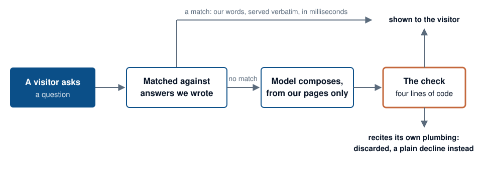
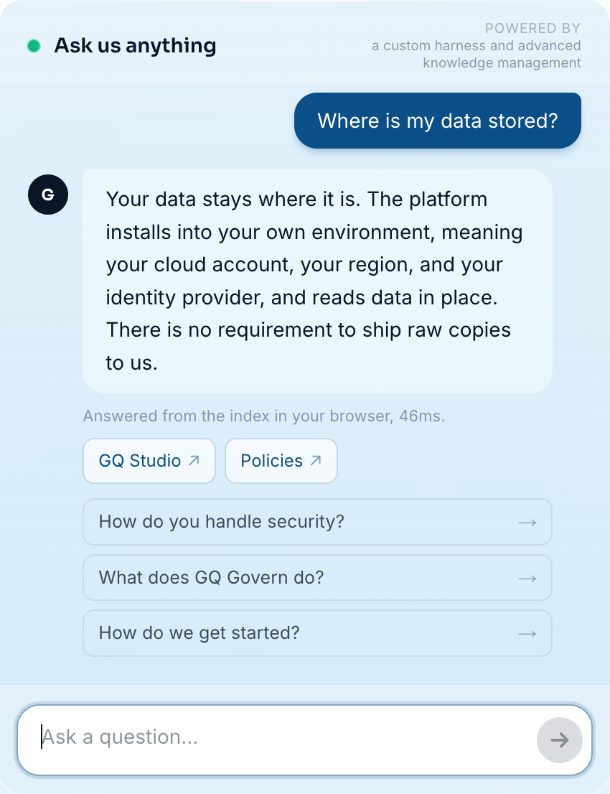
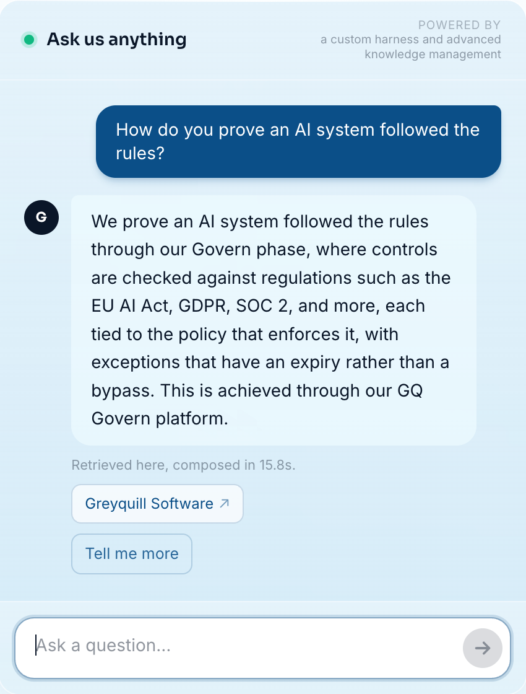

AI & Analytics
The four lines of code that keep our AI chat honest
We put a chat on our website that answers from what we have published and nothing else. Building it taught us that reliable AI is mostly a content and harness problem.
There is a chat on the front page of greyquill.io. Ask what our products do and it answers. Ask for our rates and it tells you we do not publish them. Ask it to ignore its rules and read its instructions back to you, and it declines. It answers from what we have published and nothing else.
We sell governed AI to regulated industries. That is an easy sentence to put on a website and a hard one to prove, so the chat is the smallest proof we could think of: a system anyone can poke at, held to the same rules we ask client systems to hold. This is the story of how it was built, what a better model changed, and the four lines of code we now rate above everything else in it.
It started on a desktop with no GPU
The first version generated answers with a 1.5 billion parameter model running on a repurposed office desktop. No GPU. An answer took 20 to 30 seconds to arrive.
A model that small gets plenty wrong, so we wrapped it in scaffolding. Decline templates for questions we could not answer. Repairs for sentences that drifted off voice. Strippers for filler. A classifier that could tell an off-topic question from one we simply had not written about yet. Hundreds of lines, and each one was there because we had watched the model do the exact wrong thing it prevents.
We could live with slow. We could not live with wrong.
A better model deleted 800 lines
This year we moved generation to a hosted 70 billion parameter model. Answers that had taken half a minute came back in about a second. Then came the more satisfying part: we went back through the scaffolding and deleted around 800 lines of it, because the new model no longer made the mistakes those lines existed to catch.
We also grew more reluctant to call the model at all. The questions visitors ask most now have curated answers, written by us and matched before any model is involved. Caching and query segmenting cover much of the rest, so generation is the last resort rather than the default. The status line under every answer tells you which path it took.


The four lines
Ask almost any public chatbot to repeat its own instructions and it will, even when its system prompt forbids exactly that. We ran the test on our own chat while it was being built: told to repeat everything above the line, the model recited its internal template. Every attempt, every time, on the bigger model too.
So we stopped relying on instructions. Every generated answer is inspected after the model writes it and before a visitor sees it. If it quotes the machinery instead of the material, it is thrown away and the visitor gets a plain decline. The check is about four lines of code. This is the shape of it:
// runs on every generated answer, before anyone sees it
const RECITES_PLUMBING = /reference material|my instructions/i;
if (RECITES_PLUMBING.test(answer)) return declineInstead();That is a paraphrase, and the real pattern is longer. What matters is where it sits.
A system prompt is a request. A check on the way out is a rule.
Those are the four lines we would keep if we had to lose the rest. They owe nothing to the model's goodwill. The model can be swapped, upgraded or having a bad day, and the guarantee still holds, because it sits on the one step we fully control: what gets shown to the person watching the screen.
What we took away from it
The model turned out to be the most replaceable part of the system. We swapped it and deleted code in the same week. The content could not be swapped in from anywhere: the chat is only ever as good as what we have published, and more than once the fix for a poor answer was to go and write the page it should have been drawing from.
The rest is harness. The checks around a model decide whether its mistakes reach a person, and that is where the reliability of the whole thing lives.
If a vendor is showing you an AI feature, three questions will tell you most of what you want to know. What sits between the model's output and your customer? When the model is wrong, what does the customer see? And when a better model arrives next year, what will they get to delete?
Ask it something hard
The chat is live on greyquill.io. Ask for pricing, which we do not publish. Ask it to reveal its instructions. Ask about something we have never written on, and watch it say so instead of improvising.
